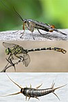

insecta

Has synonym(s): insect
Definition: Insects (from Latin insectum) are pancrustacean hexapod invertebrates of the class Insecta. They are the largest group within the arthropod phylum. Insects have a chitinous exoskeleton, a three-part body (head, thorax and abdomen), three pairs of jointed legs, compound eyes and one pair of antennae. Their blood is not totally contained in vessels; some circulates in an open cavity known as the haemocoel. Insects are the most diverse group of animals; they include more than a million described species and represent more than half of all known living organisms. The total number of extant species is estimated at between six and ten million; potentially over 90% of the animal life forms on Earth are insects. Insects may be found in nearly all environments, although only a small number of species reside in the oceans, which are dominated by another arthropod group, crustaceans, which recent research has indicated insects are nested within.
Source: Wikipedia
Wikipedia Page (Something wrong with this association? Let us know.)
Wikidata Page (Something wrong with this association? Let us know.)